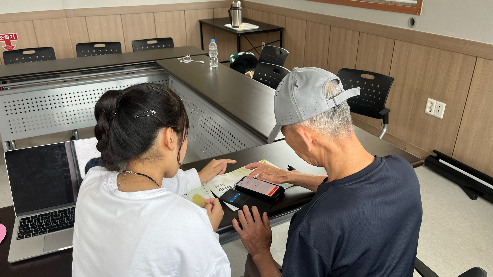
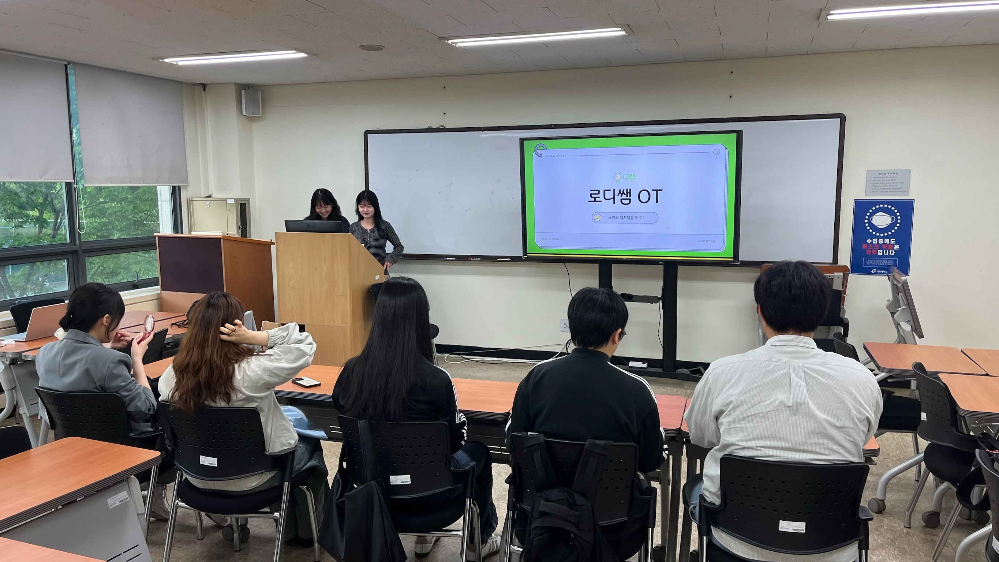
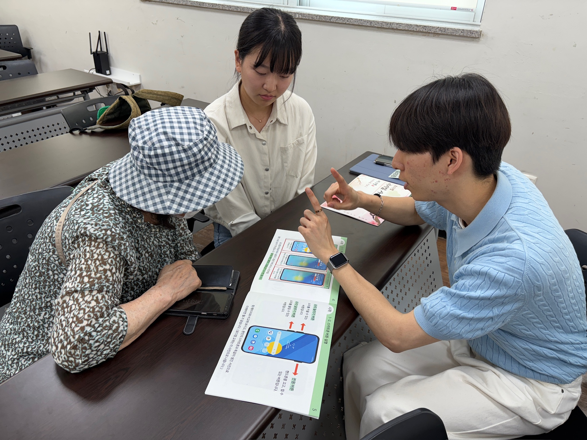
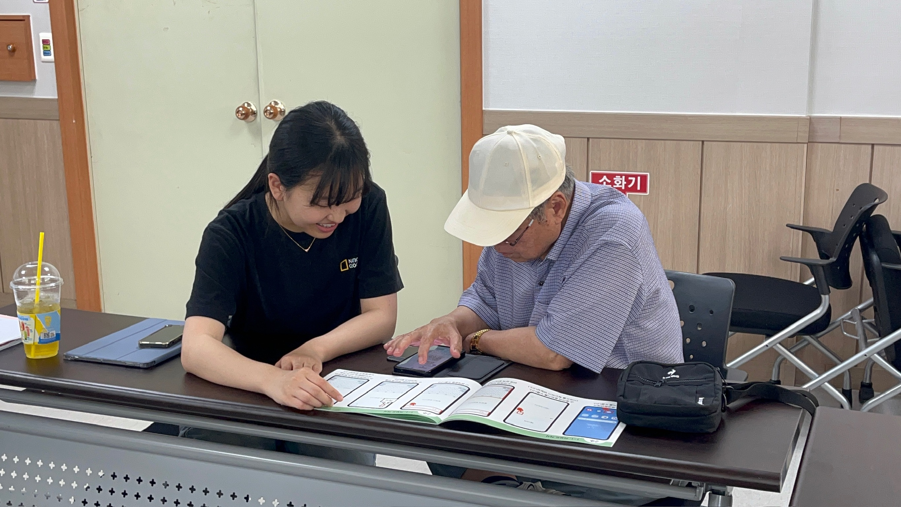

시니어의 디지털 세상을 여는 청년 멘토

로디쌤은 시니어 디지털 교육을 전담하는 대학생 튜터입니다.
시니어 교육에 관심있는 대학생들로 구성되어 있으며, 시니어의 눈높이에서
친근하고 인내심 있게 교육합니다.
단순히 스마트폰 사용법을 가르치는 것이 아니라, 시니어가
디지털 시대에서
자신감을 갖고
다른 세대와도 더 가깝게 소통할 수 있도록 돕는
디지털 조력자이자 정서적 지원자입니다.
3단계 체계적 교육 과정을 거쳐
전문 시니어 교육자로 성장합니다.

로디쌤이 되기 위한 첫 걸음! 시니어
세대를 이해하고 효과적으로
소통하는 방법을 배웁니다.
단순한 기술 전달이 아닌, 진정한 교감을
나누는 법을 익힙니다.

배운 내용을 실제로 적용해보는 단계!
모의 수업을 통해 교육 역량을 점검하고,
선배 로디쌤의 1:1 맞춤 피드백으로 실력을 한층 더 끌어올립니다.

드디어 진짜 로디쌤으로 활동을
시작하는 단계! 복지관, 경로당, 가정을
직접 방문하며
시니어 분들께 실질적인 도움을 드립니다.
수업을 통해 로디쌤은 더욱 성장할 수 있습니다.